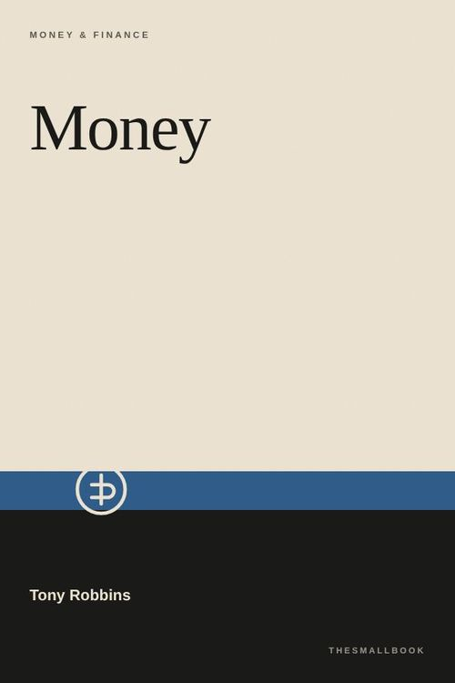

Library › Ask the Library › What is the 7-step plan to financial freedom?
What is the 7-step plan to financial freedom?
The short answer
The legends agree: allocation drives returns, fees are the killer, behavior beats IQ. Save aggressively, cut every fee, diversify into a simple portfolio, automate, and check quarterly, not daily.
The books behind the answer

Money: Master the Game
Tony Robbins · 2014 · 8 min · 6 lessons
Financial freedom is a game with known rules: save aggressively, cut fees, diversify, and let time compound. Play it, don't guess it.
- The Financial Game Is Rigged, So Change the Rules: Index funds + long holding beats the professionals at their own game by not playing it.
- The Magic of Compounding: Time Is the Force: Start early, save monthly, touch nothing, the first decade is the magic one.
- The Core Four: Diversify Like the Legends: Stocks, international, bonds, buffer, rebalanced yearly. The only free lunch.
- The 7-Step Plan: Simple Rules, Massive Results: Save 10%, cut fees, diversify, rebalance, automate, boring beats brilliant.
A failure that proves it
Why did MC Hammer fail?
1996 · FAME · Loss: Peak wealth ~$33M → bankruptcy with $13M debt
MC Hammer earned $33M and kept nothing. The plan isn't how much you make, it's how much you keep.
The gap is the freedom. Earning $33M and keeping $0 is a richer-looking failure than earning $50,000 and keeping $15,000. Wealth is not what you make; it's what you keep when the music stops.
Questions people ask next
Can I read this in Hindi?
Yes. This answer is written in simple English. Open any linked book and choose Hindi or Hinglish to read the full lessons in your language, with audio where available.